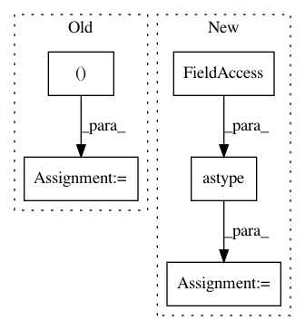

8d0d0c7a6db3904f0222cbe058388a92cf21a548,calamari_ocr/ocr/dataset/imageprocessors/center_normalizer.py,CenterNormalizer,measure,#CenterNormalizer#,30
Before Change
def measure(self, line):
h, w = line.shape
smoothed = filters.gaussian_filter(line, (h * 0.5, h * self.smoothness), mode="constant")
smoothed += 0.001 * filters.uniform_filter(smoothed, (h * 0.5, w), mode="constant")
a = np.argmax(smoothed, axis=0)
a = filters.gaussian_filter(a, h * self.extra)
center = np.array(a, "i")
deltas = abs(np.arange(h)[:, np.newaxis] - center[np.newaxis, :])
mad = np.mean(deltas[line != 0])
r = int(1 + self.range * mad)
After Change
borderType=cv.BORDER_CONSTANT)
smoothed += .001 * cv.blur(smoothed, (w, int(h*.5)), borderType=cv.BORDER_CONSTANT)
a = np.argmax(smoothed, axis=0).astype(np.uint16)
kernel = cv.getGaussianKernel(int((8.*h*self.extra)+1), h*self.extra)
center = cv.filter2D(a, cv.CV_16U, kernel, borderType=cv.BORDER_REFLECT).flatten()
deltas = abs(np.arange(h)[:, np.newaxis] - center[np.newaxis, :])
mad = np.mean(deltas[line != 0])
r = int(1 + self.range * mad)
In pattern: SUPERPATTERN
Frequency: 3
Non-data size: 5
Instances
Project Name: Calamari-OCR/calamari
Commit Name: 8d0d0c7a6db3904f0222cbe058388a92cf21a548
Time: 2021-02-06
Author: ChWick@users.noreply.github.com
File Name: calamari_ocr/ocr/dataset/imageprocessors/center_normalizer.py
Class Name: CenterNormalizer
Method Name: measure
Project Name: Calamari-OCR/calamari
Commit Name: 8d0d0c7a6db3904f0222cbe058388a92cf21a548
Time: 2021-02-06
Author: ChWick@users.noreply.github.com
File Name: calamari_ocr/ocr/dataset/imageprocessors/center_normalizer.py
Class Name: CenterNormalizer
Method Name: dewarp
Project Name: luispedro/mahotas
Commit Name: 93663c2cc8c0c8bc3c6f28c27679707305948c80
Time: 2010-05-11
Author: lpc@cmu.edu
File Name: tests/test_texture.py
Class Name:
Method Name: test_cooccurence